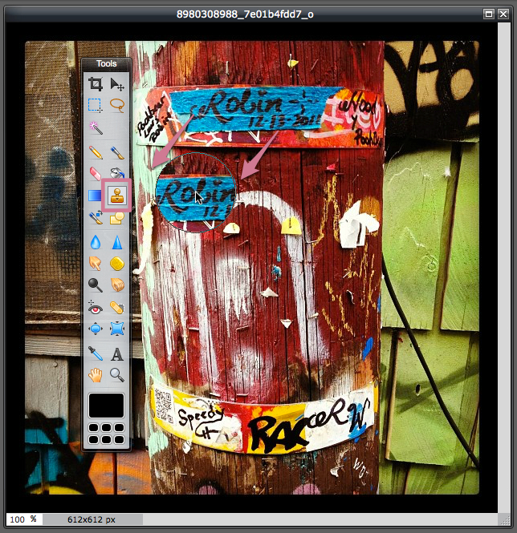
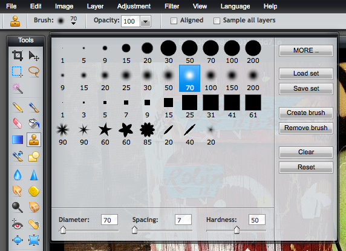
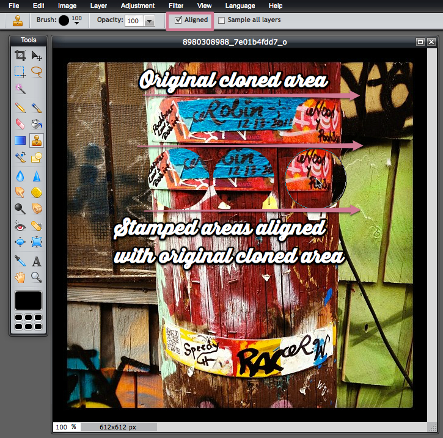
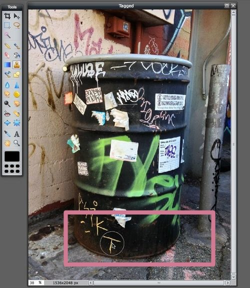
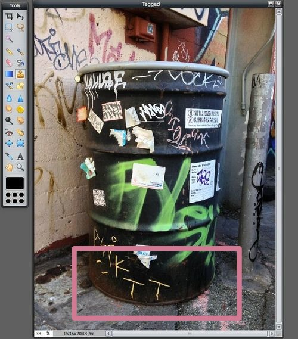
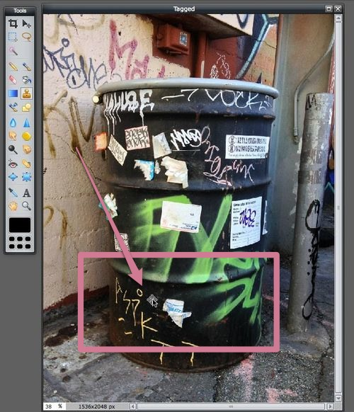
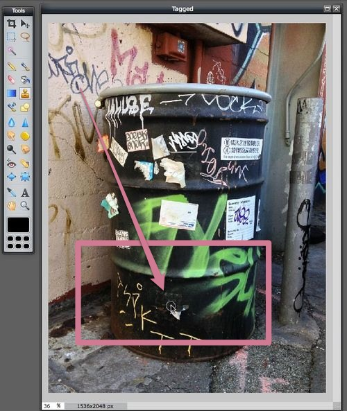

How to use the clone stamp tool in Pixlr Editor

The clone stamp tool in Pixlr Editor, as you might imagine, does one simple thing: It copies image details and pastes those details in the place of your choosing on the same layer. But, the clone tool can be used for more than just straight copying. Many people use it to create natural-looking blending when they are touching up a photo they’ve manipulated. Here are a few instances that illustrate some of its uses:
- You want to add a dozen golf balls to the shot of your uncle concentrating on sinking that one golf ball that’s currently on the putting green.
- You like the clouds in your landscape shot, but you want more of them — and they need to look authentic.
- That close-up of your daughter smiling looks great, but those two scratches on her cheek from the briar patch in the backyard need to seamlessly be painted away.
Using your brushes
What’s handy about this tool is that you have all of the brush options at your disposal. You can even use brushes you’ve created and saved before for other purposes. It’s a good idea to use a soft edge brush unless you want a very hard line where the cloning happens. Likewise, you can lower the opacity for a light blending touch.

A quick note about the “aligned” option
One sometimes confusing detail about the clone tool is how to use the “aligned” option. When aligned is not selected, your sample point will remain where you initially sampled until you sample again. Every time you use your brush, you’ll paste the original area again and again. When align is selected, the sampling point follows your mouse as you move it.

Cloning, step-by-step
- The tool looks like a rubber stamp. Once you choose it, your clone options will appear at the top of your image. Adjust your options if you wish.
- Place your pointer in the exact location you want to sample. Hold the Alt (Command on Mac) button down. You’ll notice the mouse pointer has turned to a target to indicate that it’s time to pick the target area you’d like to clone. Click on the location you want to sample. Let go of the Alt button.
- Move your brush to the area you want to apply what you’ve cloned and hold down the mouse button to paint. You’ll want to experiment with this tool to get the hang of it. Try small circular motions until you become more confident.
Examples of usage
Let’s say we’d like to add a second “T” next to the one at the bottom of this graffitied oil drum. The radius of 180 pixels is about the right size for our brush, which we can specify in our options.

The background behind the T is relatively solid, so we don’t need to worry about using hard edged brushes. In this simple instance, we can completely copy and paste the T. Very easy.

Now, let’s say we want to remove some of the graffiti — to essentially erase it by pasting over it with the background color of the oil drum. We choose a softer edged brush (50 pixels) and a lower opacity (70 pixels).

If you move your mouse to a new area and paint, you’ll paint on the same thing you originally cloned. You can sample a new clone area at any time, but notice how we can begin to remove the blue-and-white sticker on the oil drum by using the clone stamp tool:
